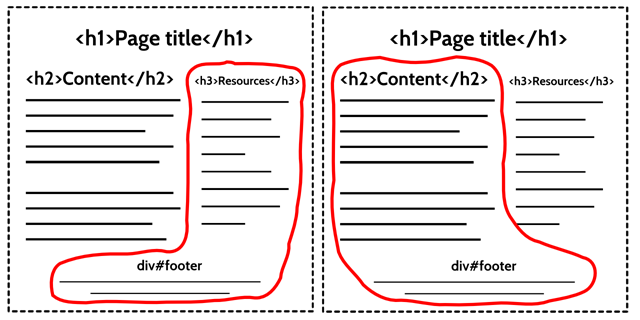

Html5 + Epub3

@dynnamitt
Kjetil Flovild-(Dynna)Midtlie
- <<<<<<< HEAD Jobber hos Docstream A/S
- Har jobbet med IKT i flere bransjer/selskaper i over 18 år.
-
Koder og designer nå Shell/CSS/CoffeeScript/Nodejs/Java
.. i tillegg til Markup/down ======= Jobber hos Docstream A/S med Bjarte Kvalheim. - Har jobbet med IKT i flere bransjer/selskaper i over 18 år.
-
Koder og designer nå Shell/CSS/CoffeeScript/Nodejs/Java
.. i tillegg til Markup/down -
Utvikler en ny SAAS/tjeneste for tekn.forfattere og forlag.
Epub/XML basert WYSIWYG editor. Kodenavn : readin.no >>>>>>> c492f36deaf6159647255d7a8f8c3cc62842417a
Agenda
- HTML5 <<<<<<< HEAD
- Demos outline med/uten seksjoner =======
- Demos outline med/uten seksjoner >>>>>>> c492f36deaf6159647255d7a8f8c3cc62842417a
- EPUB3 = mini-www uten http
- demos (pandoc+leser)
- Ennå mer semantikk (inflection)
- demo WYSIWYG epub web editor <<<<<<< HEAD
OK?
HTML5
=======HTML5/6/7?
>>>>>>> c492f36deaf6159647255d7a8f8c3cc62842417a
<!doctype html>
- 10 år siden spec start. <<<<<<< HEAD
- 2 forskjellige utgaver ; XHTML og HTML
- HTML5 har blitt mer kompleks.. gudskjelov
- Seksjoner; section,article,nav,aside =======
- 2 forskjellige utgaver ; XHTML og HTML
- HTML har blitt mer kompleks.. forsøk 2.
- Seksjoner; section,article,nav,aside >>>>>>> c492f36deaf6159647255d7a8f8c3cc62842417a
<<<<<<< HEAD h1-h6 problem:
======= h1-h6 issue nr.1
>>>>>>> c492f36deaf6159647255d7a8f8c3cc62842417a 
<<<<<<< HEAD løsning ======= Løsning >>>>>>> c492f36deaf6159647255d7a8f8c3cc62842417a
demo outline/seksjoner
<<<<<<< HEAD =======
Pandoc på winDOS: instruksjoner
EPUB versjon 3
-
<<<<<<< HEAD
- "final spec" siden oktober 2011
- idpf.org ; Adobe, Barnes & Noble, Google, Kobo/Rakuten, O'Reilly, Samsung, Sony
- Byttet ut XHTML1 med HTML5
- =======
- "final spec" siden oktober 2011
- idpf.org ; Adobe, Barnes & Noble, Google, Kobo/Rakuten, O'Reilly, Samsung, Sony, Apple
- Hvorfor ebøker?
- Hvorfor EPUB?
- Byttet ut XHTML1 med HTML5
- >>>>>>> c492f36deaf6159647255d7a8f8c3cc62842417a Enklere TOC format
Demo
Word->Pandoc->leser
<<<<<<< HEAD =======eller last ned epub's her:gutenberg.org
>>>>>>> c492f36deaf6159647255d7a8f8c3cc62842417a..ennå mer semantikk!
Egen semantisk "bokstruktur" standard
Utvidbar <<<<<<< HEAD ======= >>>>>>> c492f36deaf6159647255d7a8f8c3cc62842417a
..
<section
epub:type="lot loi daisy:bibliography">
tittel tekst
...
</section>
demotime readin/ED
<<<<<<< HEAD =======Linker/ressurser
<<<<<<< HEADNoen eksterne lenker >>>>>>> c492f36deaf6159647255d7a8f8c3cc62842417a